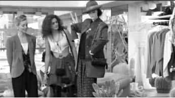
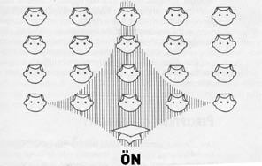

4. BÖLÜM
ÇEVRE VE İLETİŞİM ORTAMINA ETKİSİ
Bazı mağazalar vardır, kendinizi oraya ait hissetmezsiniz. Örneğin çok pahalı, bütçenizin elvermeyeceği bir yerdir. Duvarlar, avizeler, raflar üzerinize üzerinize gelir. Kırılacakmış gibi duran kibirli ve ilgisiz satıcılar, sanki dekorun parçası gibi durur. Mağaza, üzerinize bol gelen emanet bir ceket gibi size yabancıdır. Boğulacak gibi olursunuz ve kendinizi dışarı zor atarsınız.
Yukarıdaki gibi bir pozisyonda muhtemelen kalmışlığınız vardır. Üstelik büyük bir ihtimalle bu durum, bir amaç dahilinde yaratılmış ve istenilen etkiyi vermiştir. Mağaza, bilinen çok pahalı bir markaya aittir ve belli olan müşteri potansiyelini bozmak istemez. Statüsü yüksek olan insanlar, bu statülerini korumak ve kendilerinden düşük statüde olanlarla paylaşmak istemezler. Bu nedenle mağaza yöneticilerine düşen, hedef kitlesindekiler kadar zengin ve statülü olmayanları mağazadan uzak tutmaktır. Bunu sözel bir tarzda iletmek problem yaratabilir. O zaman sözsüz mesajlar devreye girer. Size öyle bir ortam hazırlanır, alacağınız hizmete karşılık öyle maliyetler çıkartılır ki yüzünüze tokat gibi çarpar ve “Ben ne ettim de buralara düştüm!” der, neredeyse özür dileyip çıkarsınız. Çevresel etki görevini yapmış, tek kelime etmeden size derdini anlatmıştır.
Julia Roberts ile Richard Gere’nin birlikte rol aldıkları Pretty Woman59 adlı filmi pek çok kişi hatırlar. Julia Roberts filmde bir hayat kadınını oynamaktadır ve meslek icra ettiği basit kıyafetlerle, zenginlerin oturduğu Beverly Hills’teki bir mağazaya girer. Mağazadaki her şey ona yabancıdır ve o mağazaya ait olmadığı mesajını verir. Kadın bu mesajı anlamaz ve ısrarla alışveriş yapmak ister. Sözlü mesajları da anlamak istemeyince mağaza görevlisi kadınlar Roberts’i kabaca oradan uzaklaştırırlar. Çevresel mesajlar, çoğunlukla son derece açıktır. Fakat bu mesajı anlayıp anlamamak kişinin kendisine kalmıştır.

Julia Roberts - Pretty Woman filmi.
Çevrenin iletişim üzerine etkisi iki şekilde gerçekleşir: Birincisi iletişimin gerçekleştiği çevrenin, devam eden iletişim sürecine olan etkisidir. Bu etki isteyerek ya da istemeden gerçekleşir. Kadınların içki içenlere arkadaşlık ederek, içki tüketimini artırmaya çalıştıkları, gece kulübü ya da pavyon olarak adlandırılan mekânlar vardır. Bu kadınlara “consume” (tüketim) fiilinden türetilerek “konsomatris” adı verilir. Bu gibi mekânların ortamı her zaman son derece loş, neredeyse karanlıktır ve renkli ışıklarla doludur. Yerler ve duvarlar genellikle sesi yalıtacak ve sıcak bir ortamı yaratacak şekilde halı vb. maddelerle kaplıdır. Karanlık ve loş ortamlarda insanların birbirlerine daha fazla yaklaşma eğilimi gösterdiği tespit edilmiş bir gerçektir ve bunu işletmeciler çok iyi bilir. Bu tür ortamlarda insanlar daha rahat hareket eder, daha uzun kalırlar ve tüketim artar. Ortamdan alınan cesaretle diyalog daha rahat kurulur, daha uzun süre sohbet edilebilir. Bu sayede erkekler, ilk defa tanıştıkları kadınlarla samimi olabilir ve kadınlar tarafından alkol tüketmeye ikna edilirler. Ara sıra denetim yapılması için floresan lambalar açıldığında, bir anda ortamın büyüsü bozulur, gerçek mekân ortaya çıkar ve herkes birbirinden uzaklaşır.
Bilinen bir örnektir ama tekrar edelim. Özel ya da devlet sektöründeki yöneticiler, statüleri ve seviyeleri arttıkça odalarını değiştirirler. Statü büyüdükçe oda büyür ve bulunduğu kat yükselir. Örneğin alt seviyelerde, şef seviyesindeki bir yöneticinin odası, girişte küçük bir camlı bölmeden oluşur. Kapısı açıktır ya da yoktur. Kişiler buraya rahatça girebildiğini hisseder ve teklifsizce dalar. Oda ve masa küçüktür, müşteri kendisini burada büyük hisseder. Bu, diyetisyenlerin kilo vermek isteyenlere küçük tabak kullanmalarını tavsiye etmeleriyle aynı mekanizmaya sahiptir. Büyük tabaklarda yemek göze az görünür. Aynı miktar yemek, küçük tabakta insanın gözüne fazla görünür ve gözü doyar. Benzer şekilde, küçük bir oda, müşteri üzerinde aynı etkiyi yaratır. Şefle konuşurken kendini fazla zorlamaz, aklına geldiği gibi konuşur. Duruma göre kavga dahi edebilir. Masaya istediği kadar yaklaşabilir; kocaman koltuklarla ve sehpalarla bir set örülmemiştir. Otoriteye ne kadar yaklaşabilirseniz, otoritenin gücü o oranda azalır.
Yöneticinin seviyesi arttıkça, odasına ulaşmak için merdiven çıkmak ya da asansöre binmek gerekir. Mesafe artıkça endişe de artar. Bazı yöneticilerin aşılması gereken sekreterleri vardır. Bazıları için özel kalem müdürünü ayrı, sekreterini ayrı aşmak gerekir. Her aşılan engel ve kapı, her çıkılan kat gerginliği artırır, kişiyi dış dünyadan uzaklaştırır. Yöneticiyle görüşmek için iyi bir sebebi olması gerektiğini hissettirir. Rahatsız bekleme odalarında bir süre bekletilir, gerginliği artar. Bekleme süresi uzadıkça “Allah beni kahretsin, ne işim vardı burada?” diye düşünmeye kadar iş uzar. Askerlik yapanlar bilir. Komutan odalarının girişinde boy aynası vardır ve üzerinde “Kıyafetini düzelt!” yazar. Bu yazıyla, ayna kişilerde yine gerginlik yaratır. Mesaj çok açıktır: “Kılık kıyafetin düzgün değilse yanıma gelme!” Net bir emirdir. Bu tür engeller ve talimatlar, odaya girecek kişiler üzerinde doğrudan baskı yaratır. Oda kocamandır, odaya giren ise içerisinde kendisini küçücük hisseder. Yönetici kocaman bir masanın ardında, arkalığı yüksek deri bir koltukta, son derece heybetli görünmektedir. Misafir koltuğu masaya uzaktır. Ulaşılması zordur. Kıymetli cam eşyalarla dekore edilmiştir ve kişi bunları kazara kırmaktan korkar. Bu faktörlerin tamamının kişiler ve iletişim üzerinde amaçlanan ve çoğunlukla amacına ulaşan etkileri vardır. Odanın sahibi her zaman 1-0 öndedir. Odanın yarattığı küçüklük etkisi öyle bir yerleşir ki insanın üzerine, bu etki tüm diyaloğun yönünü değiştirir. Yönetici, personeliyle masanın ardından görüşürken, misafirlerini misafir koltuklarında ağırlar. Masa ardında görüşmek otoriteyi temsil ederken, böyle bir etkinin arzu edilmediği misafir görüşmelerinde koltuklar tercih edilir.
Örnek Olay: Bir gün, üst düzey bir amirim beni denetlemeye geldi. Gelir gelmez emir verdi ve masamın üzerinde ne varsa hepsini kaldırttı. Bana ait hiçbir şahsi eşya kalmadı. Sonra çantasından klasörler çıkarmaya başladı. Klasör ve kitaplar bitmek bilmiyordu. Hepsini domino taşı gibi kocaman masanın üzerine dizdi ve masanın üzerinde boş bir yer yoktu. Ancak denetleme esnasında klasörlerden sadece birisini açarak içerisindeki soruları sordu. Belki bir tane daha klasör açmıştır ama sadece o kadar. Peki, neden bu kadar zahmete girmişti?
Aslında yöneticimin bunu yaparken iki amacı vardı. Bir tanesi, kendisini iyi hissetmesi içindi. Kendisi okumayı çok seven ve öğrenmeyi amaç haline getirmiş bir kişiydi. Klasörler, kendisi tarafından özenle hazırlatılmış, standart hale getirilmiş evraktan oluşuyordu. Bu nedenle kendisini dokümanlarından oluşan bir duvarın arkasında daha iyi hissediyordu. Denetlemeye daha fazla yoğunlaşıyor ve daha rahat yükleniyordu.
Bir diğer amacı ise bana mesaj vermekti. Normal olarak bir sürü kitap ve dokümanın benim gözümü yıldırmasını ve çekinmemi istiyordu. Böylece gerçekten konuya hâkim olup olmadığımı, soracağı sorulara hazırlık derecemi görmek istiyordu. Oluşturduğu ortamla bana, kendisinin konulara çok hazır olduğunu ve zorlama niyetini anlatmak istiyordu.
Çevrenin iletişim üzerine bir diğer etkisi ise doğrudan verdiği mesajlardır. Verilen mesajların bazıları isteyerek verilir, bazıları ise kendiliğinden gerçekleşir. Örneğin Ankara’daki MİT Müsteşarlığı’nın ya da Genelkurmay Başkanlığı’nın heybetli giriş nizamiyeleri, güçlü bir organizasyonun varlığını belirtmektedir. Askeri üslerin çevre emniyet sistemleri, bariyerleri, zırhlı araçları ve teçhizatlı nöbetçileri, saldırı niyetinde olanları caydırmaya yöneliktir. Bu mesajlar titizlikle seçilerek verilirler. Bir de farkında olmadan verilen mesajlar vardır. Daha önce belirttiğim gibi, sözsüz iletişim çoğunlukla farkında olmayan bir kaynak ile çoğunlukla farkında olan bir alıcıdan oluşur. Bu bağlamda biz farkında olmasak da çevre düzenlememizle etrafımıza mesajlar veririz. Örneğin bir işyerine denetleme amacıyla gelen bir amir, etrafı düzensiz görürse, denetlenen yerin yöneticisinin denetlemeyi umursamadığı, denetleyene ve işine önem vermediği mesajlarını alabilir. Bunun sonucu kötü bir denetleme sonucu olarak gelebilir.
Misafirliğe giden kadınlar da benzer mesajlar almaya eğilimlidir. Gittikleri evin hanımı eğer ortalığı yeterince toplamamışsa, yeterli hazırlık yapmamışsa misafirlerini önemsemediği sonucu çıkarılır ki sonu küskünlüğe ve acımasız misillemelere varan yaptırımlara kadar gidebilir.
Çevre İletişimine Bir Örnek Dershane Yerleşimi
Dershaneler, çevre iletişimini değerlendirmek bakımından kıymetli örneklerdendir. Hepimiz uzun yıllarımızı okulların ve benzeri yerlerin dershanelerinde, yani dersliklerinde geçiririz. Dershaneler, okulun imkânlarıyla da bağıntılı olarak çok çeşitlilik gösterir. Kimisi büyüktür, kimi küçük; kalabalık olanlar; sakin sınıflar; gürültülü sınıflar. Örnekler çoğaltılabilir. Bunların her birinin öğrenime etkisi farklı farklıdır. Bunu çok okul değiştirmiş olanlar daha iyi anlayacaktır.
Dershane yerleşiminin öğrenci ve öğretmen davranışlarına olan etkisi uzun yıllar boyunca incelenmiş ve çok ilginç sonuçlar elde edilmiştir.60 Bu çalışmalar, birbirinden çok farklı birçok dershanede yürütmüştür. Elde edilen sonuçlara göre:

Dershane yerleşimi.
İpucu: Hepimiz biliriz, öğretmenler genellikle arka köşelerde oturan öğrencilerin dersi dinlemediklerinden ve kaynattıklarından şikâyetçidirler. Bu önyargı haksız değildir, öğretim hayatını sınıfın arka sağ köşesinde tamamlayan bir öğrenci olarak söylüyorum bunu. Dersi dinlemeyen bir öğrenci tespit ettiğinizde, ön sıralara oturtmaya devam edin, öğrencinin ilgisinin otomatikman arttığını göreceksiniz.
Çevre Algımız
Çevremizdeki şeyler sınırsızdır. Eşyalar, ofisler, binalar ve daha birçok yapı ve olgu sayılabilir. Bu çeşitliliğe rağmen çevresel faktörler benzer boyutlar altında değerlendirilebilir. Bu şekilde, çevreye verdiğimiz mesajları daha belirgin ve bilinçli bir şekilde iletebiliriz. Aşağıdaki altı boyut çevresel algımızın merkezindedir:61
Resmiyet Algıları
Çevre öğeleri resmi ya da teklifsiz olarak değerlendirilebilir. Bir ofis fazlasıyla resmi bir yer olabilirken, aynı ofiste kuruluş yıldönümü partisi son derece rahat bir ortamda gerçekleşebilir. Genel olarak ağır mobilyalar, koyu renkler, ağır perdeler, girişteki kapıcının ya da güvenlikçinin kıyafeti, duvarlardaki resimler (örneğin Atatürk portreleri) resmiyet algımızı etkiler. Çalışma odalarındaki değişik şahsi eşyalar, örneğin biblolar, resimler, küçük oyuncaklar, ortamı daha teklifsiz bir hale getirebilir. Akıldan çıkarılmaması gereken nokta, resmiyetin artışıyla iletişim davranışının daha rahatsız, yapay, çekinceli ve şekilci olacağıdır. Resmi ortamlarda ses tonuna dikkat edilir; daha sakin gülünür ya da hiç gülünmez; hitaplar ciddileşir ve dolayısıyla iletişim doğal formunu kaybeder. Bu etki çoğunlukla istenen bir durumdur. Filmlerde bilinen bir klişedir: Adam öfkelendiği birine haddini bildirmek için hışımla işyerini basar ama ortamın ağırlığı nedeniyle ezilir, sakinleşir ve söylemek istediklerini söyleyemeden oradan ayrılır.
İpucu: İşadamları, kiminle hangi ortamda konuşulacağını çok iyi bilirler. İş yapacakları kişilerle daha rahat iletişim kurabilmek için buna uygun, resmiyetten uzak mekânlar seçerler. Örneğin teknede yenilen bir yemek, birçok formaliteyi kolayca aşarak daha rahat görüşmeyi sağlar. Siz de bu taktikleri deneyebilirsiniz. Eşinizle ya da çocuklarınızla yaşadığınız bir sorunu evde konuşmaktansa değişik ve rahat bir mekânda konuşmak, çok daha kolay iletişim kurmanızı sağlayacaktır.
Sıcaklık Algıları
Psikolojik olarak sıcak hissettiğimiz yerler, bizlerin orada daha fazla kalmasına, rahatlamasına ve daha rahat hissetmesine sebep olur. Bu sıcaklık bina yapısı, ışık, duvar boyası ya da kâğıdı, halı kaplı olması, mobilyaların döşemesi, koltukların yumuşaklığı gibi birçok faktörün bir araya gelmesinden oluşur. Ev ortamımız genel olarak bize sıcak gelirken, tartışmaların ve huzursuzlukların yoğun olduğu bir dönemde bu algı değişebilir. İnsanın evde durası gelmez, kendisini durmadan dışarı atar. Demek ki, sıcaklık algısı, fiziksel olduğu kadar psikolojik de olabilir.
Mahremiyet Algıları
Kapalı çevreler daha fazla mahremiyet hissi uyandırır, özellikle az sayıda kişi olması durumunda, bu his artar. Loş ışık ve dekor da mahremiyet hissini artırır. Gece kulüplerinde “loca” tabir edilen ayrılmış bölmeler vardır. Buradaki etraftan yalıtılmış ortamda erkekler kendilerini daha rahat hissederler ve daha uzun kalmak suretiyle harcamalarını artırırlar.
Kimi erkekler umumi tuvaletlerde pisuvarları asla kullanamazlar. Birisi yanlarına geldiğinde, huzursuz olurlar. Bu tipler kabinleri tercih ederler. Etraflarındaki kapalı alan, suni bir mahremiyet duygusu yaratır ve rahatlamalarını sağlar.
Ergenlerde mahremiyet algısı son derece önemlidir. Kişiliği oluşmaya başlayan ergen, odasının kapısını kapalı tutar, girilmesini engellemek için kendince önlemler alır. Çekmecelerini kilitler. Genç aslanın ailesinden ayrılarak kendi bölgesini oluşturmasıyla benzer bir çabadır bu. Bu sayede kendisini daha rahat hisseder. Aileler ise bu mahremiyetten rahatsız olur. Bazıları, gencin kapıyı kapatmasına izin vermez ve odada fazla zaman geçirince kızarlar. O zaman da ergen ve aile arasında çatışma sıkça rastlanır ya da ergen çekingense daha da içine kapanık bir hal alabilir. Ailelerin haklı kaygılarla başvurdukları bu çabaları, ergenlerin fazla dikkatini çekmeyecek ve mahremiyet algılarına zarar vermeyecek şekilde göstermeleri birtakım problemleri önlemekte oldukça faydalı olacaktır.
Genç odaları, mahremiyetin bir parçasıdır.
Aşinalık Algıları
Yeni bir kişiyle tanıştığımızda ya da aşina olmadığımız bir çevreye girdiğimizde çoğunlukla tedirgin ve dikkatli davranırız. Örneğin, bir restorana ya da bara ilk defa girdiğimizde fark ettirmeden etrafımızı süzer ve ortamı tanımaya çalışırız. Yeni bir mekânın bizim henüz bilmediğimiz birçok ritüeli vardır, bu nedenle hızlı hareket etmemeye çalışırız. Bize tanıdık gelen yerlerde kendimizi çok daha rahat hissederiz, bu nedenle bu tür yerlere gitmeyi tercih ederiz. Yeni bir okula ya da işe başlayan bir kişi, yemekhanenin ya da lavaboların yerini bile tam olarak bilmez. Bu nedenle hep tedirgindir. Sık sık yerleri karıştırır. Kimi insanlarda bu konu çok daha rahatsızlık verirken, kimileri daha rahat atlatır. Bulunulan yere aşinalık arttıkça, üzerindeki çekingenlik de azalır ve daha rahat iletişim kurulmaya başlanır.
Her yaz aynı otele ya da pansiyona tatile gelen insanlar vardır. Onların üzerindeki rahatlık duygusu çok bariz bir şekilde belli olur. Önüne geleni selamlar, nereden ne alınıp yenir bilir. İlk defa gelenler ise yanlışlık yapacakları korkusuyla ilk günler yeterince eğlenemezler bile. Bir ortama aşina olmak, yani oranın tanıdık gelmesi, zaman alan bir süreçtir. Bazı insanlar, ortama daha çabuk ayak uydurur ya da uyum sağlarlar; bazıları daha geç. Ortama ne kadar çok aşina olunursa, orada o kadar rahat hareket edilir.
Görme özürlü insanlar için aşinalık çok daha önemlidir. Onlar, evlerinde ya da kendilerine tanıdık gelen bir yerde, her eşyanın yerini hafızalarına almışlardır. Evin içerisinde, gören bir insan kadar rahat hareket ederler. Ancak yeni bir ortama girmeleri, onların gören kişilerden daha fazla huzursuz olmalarına yol açar.
Uzaklık Algıları
Uzaklık-yakınlık algıları duruma ve kişilere göre çok fazla değişiklik gösterebilir. Örneğin insanların çok fazla yürümek zorunda kaldığı kırsal bölgelerde yaşayan kişiler için bir yerin yakınlığı, her yere toplu taşımayla giden büyükşehir insanlarıyla aynı olmayabilir. Çalıştığım yerlerde, özellikle Türkiye’nin doğusunda, arazide bir yere yürüyerek gitmek zorunda kaldığımda, varış noktasına ne kadar kaldığını yanımdaki yöre insanlarına sorardım. Onlar da genellikle, “Ya şurası işte, çok az kaldı, tepeyi aşınca, bir sigara içimi mesafe...” şeklinde betimlemelerle yakınlığı ifade ederlerdi. Fakat nedense onların anlatımlarından edindiğimiz yakınlık hissi gerçekle hiç uyuşmaz, çok uzun mesafeler yürümek zorunda kalırdık.
Eğer varacağınız nokta, keyif alacağınız bir yerse, yol bir türlü bitmek bilmez. Sabırsızlanırsınız. Eğer o nokta artık sizin için bir şey ifade etmiyorsa, tam tersi duygular yaşarsınız. Yol çok kısadır ve bitivermiştir işte.
İletişimin mesafe algısı, kişiler arası iletişimle ilgilidir. Bazen sevdiğiniz bir kişiyle yan yana otururken aslında aranızda çok uzun mesafeler olabilir. Kırgınlıklar arttıkça mesafeler de fazla gelir insana. Soğuk konuşmaları hissedince “Neden bana karşı böyle mesafelisin?” diye sorgularız.
Alan daraldıkça (asansör, bekleme odası vs. gibi) tanımadığımız kişilerle aramıza daha fazla mesafe koymaya çalışırız. Özellikle küçük asansörlerde karşılaşılan yabancılar bu etkiyi yaratır, asansörün duvarına sırtımızı yapıştırmaya kadar gider.
Zaman Algıları
İnsanlar uzayda olduğu kadar zamanda da yaşar.62 Çevre de zamana bağlıdır ve zamanın organizasyonu insan davranışına da etki eder. Zaman, iletişimsel çevrenin bir parçasıdır. Başlangıçta zaman gibi elle tutulamayan bir kavramın masa, duvar, sandalye, hava durumu gibi şeylerle aynı grupta değerlendirilmesi garip gelse de, zamana çoğunlukla dokunulabilir bir şey muamelesi yapılır. Zaman bölünür, beklenir, tasarruf edilir vs. Dahası eşyalara çoğunlukla zamansal nitelikler ekleriz, bir sandalye ebediyen orada duruyormuş gibi örneğin.
İnsanların bulundukları ortama ve kişilere göre zaman algıları değişiklik gösterir. Okulu sevmeyen bir genç için ders saatleri çok uzunmuş gibi gelirken, aynı genç eğer sevdiği arkadaşlarıyla birlikte örneğin maç izliyorsa zaman “su gibi akıp gidebilir.” Çalışırken zaman daha hızlı geçerken tatil günleri çok daha yavaş ilerleyebilir. Oysaki zaman hiçbir şekilde değişmez, fark yalnızca bizim algılamamızla ilişkilidir. Sevdiğimiz bir kişiyle yenilen bir akşam yemeğinde zaman yetmez olurken, sıkıcı bir iş yemeği uzar gider. Oysa toplamda aynı süre geçmiştir ancak algılanan zaman son derece farklıdır.
Bazı durumlarda, iletişim zamanları uzatılarak belli bir etki yaratılmaya çalışılır. İfade alırken, sorgulamacı bilinçli bir şekilde uzun bekleme süreleri verir. Bu beklemelerde konuşmaz ve sorgulananın gözlerinin içine bakar. Stresli bir ortamda geçirilen sessiz süreler, normalde olduğundan daha uzun gelir insana. Zaman geçmek bilmez ve sorgulanan kimi zaman bu stresli ortamı kırmak için kendisini bir şeyler söylemek zorunda hisseder. Bu söylenenlerden gerekli ipuçlarını yakalamak, sorgulayana kalmıştır.
Sinemada da bunu hissedersiniz, daha doğrusu yönetmen bu hissi yaşatmak ister. Nuri Bilge Ceylan’ın Kasaba adlı filminin başlarında bir sınıf sahnesi vardır. Köy okulundaki bir sınıfta, öğretmen arkası dönük ders anlatırken, çocuklar bir kuş tüyünü havada tutmak isterler. Her zaman olduğu gibi, şiirsel ve fotoğraf dolu görüntüler eşlik etse de sahne oldukça uzun ve sıkıcı gelir insana. Yönetmen, küçük yerlerde zamanın nasıl geçmediğini anlatıverir bir çırpıda. Küçük yerlerde zamanın verdiği bir tek mesaj vardır: Sabır. Oysa büyükşehirler hareketlidir, koşturmayla geçer. Onların verdiği mesaj ise daha farklıdır: Koş.
İnsanların zaman algısı, kültürlere göre de değişiklik gösterir. Her kültürün değişik yaşam tarzı ve ritmi vardır. Bunların uyumsuzluğu, sonuçta iletişimin tamamen olanaksız kılınmasına yol açabilir. İsviçreliler belirli bir zaman dilimini sessizlik ve uyku zamanı olarak değerlendirirken, güneyli İtalyanlar aynı zaman dilimini gürültülü ve şamatayla geçirecekleri bir zaman dilimi olarak alırlar.63 Kaldı ki Türkiye’nin kuzeyinde yaşayan insanlar daha seri ve aceleci kişilikleri ve yaşam tarzlarıyla göze çarparken; ülkenin güneyindeki sıcak iklimin insanları çok daha yavaş ve hayatı ağırdan alan kimselerdir. Zamanı böylesine farklı algılayan iki kültür bu nedenle iletişimde de ciddi problemler yaşayacaklardır. Ortaya çıkan bir acil durum, her iki kültürde farklı bir etki yaratabilir.
Büyülü Bir Dünya – Kişisel Alan Faktörü
Atalarımız milyonlarca yıl önce küçük aileler halinde birbirlerinden bağımsız olarak yaşıyorlardı.64Uçsuz bucaksız dünyada sayıları, bugünküyle karşılaştırıldığında oldukça azdı; birbirlerini rahatsız etmeden özgürce geziyorlar ve avlanıyorlardı. Karşılaştırıldığında Afrika’da yaşayan bir aslandan farklı değillerdi. Tabiatta bir erkek aslan günde yaklaşık otuz kilometre alanı dolaşır ve bölgesine yabancıları sokmaz. İnsanın da durumu aynen böyleydi. Kendi özel alanı içerisinde, kendisini gayet iyi hissediyordu.
Ancak insan adlı çıplak maymunu aslandan ayıran önemli bir özellik vardı: Aslana göre çok daha fazla olan işbirliği duygusu. İnsanın doğasında olan işbirliği ve birlikte yaşama içgüdüsü, türü birbirine yaklaştırdı. Devamında kabileler kuruldu. Erkekler birlikte avlanmaya gittiler. Uzak uzak mesafelerde yepyeni avlanma yöntemleri geliştirdiler ve kendilerinden katbekat büyük vahşi hayvanları yiyerek beslendiler. Av etlerini kabilelerine taşıyarak kadınlarını ve çocuklarını beslediler. Bu ilişki diğer hayvanlarda sık görülmeyen tekeşliliğe ve bağlılığa neden oldu. Çocuklarını uzun süre yanlarında tutarak büyüttüler, kendilerini de vahşi hayvanlardan ve doğa olaylarından korumayı öğrendiler. Bu sayede yaşam süreleri uzadı ve çoğaldılar. Kabileler yetmeyince kendilerine süper kabileler kurdular ve bildiğimiz anlamda modern şehirler oluşmaya başladı. Şehirler gün geçtikçe büyüdü ve müthiş bir şekilde kalabalıklaştı. İnsanın etrafındaki kişisel alanı ise her kalabalıklaşmadan sonra biraz daha daraldı. Böylece günümüz dünyasına ulaştık. Kalabalık, tıklım tıklım, dar alanlarda yaşayan dünyamıza.
İnsanların etrafında hayali, görünmeyen, ancak herkesin az ya da çok farkında olduğu ve çoğunlukla saygı gösterdiği bir alan vardır. Buna hayali bir hava boşluğu da diyebiliriz. Ülkeleri çeviren denizlerin, ülkenin kara parçasına komşu belli bir kısmının kıta sahanlığı sayılması ve ülke toprağı kabul edilmesine benzer bir şekilde, insanların etrafındaki alan da kişinin bedenine dahil sayılır. Buna kişisel alan adı verilir. İnsanlar, kişisel alanlarını bedenlerinin bir parçası olarak görürler ve bu alana olan ihlal ve tecavüzler, çok basit bir ters bakıştan şiddet olaylarına kadar varan bir yelpazede tepki görür.
Alan kullanımıyla ilgili araştırmalar, öncelikle hayvanlar üzerinde yapılan gözlemler ve deneylerle başlamıştır. Bunlardan, İsveçli hayvan biyoloğu Heini Hediger’in çalışmaları ön plana çıkar. Hayvanat bahçelerinde yaptığı çalışmalar sonucunda, Hediger hayvanları temas ve temassız hayvanlar olarak iki grupta inceler.65 Buna göre bazı hayvanlar birbirlerine yakın yaşamayı tercih ederler; yarasalar, denizayıları, hipopotamlar, domuzlar, muhabbet kuşları ve kirpiler gibi. Temassız hayvanlar arasında da atlar, köpekler, kediler, fareler, misk fareleri, şahinler ve martılar sayılabilir. Hangi hayvanın neye göre temaslı ya da temassız yaşamayı tercih ettiğine dair bir kural yoktur görüldüğü gibi. Buna göre, bazı hayvanlar temaslı olduğundan, birbirleriyle daha fazla iç içedirler ve büyük bir olasılıkla kişisel alan yaklaşımları temassız hayvanlara göre farklıdır. Temassız hayvanlar kalabalık durumunda, kişisel alanları daraldığında, temaslı hayvanlara göre daha fazla strese girebilirler. Buradan hareketle, hayvanların kişisel mesafelerini dört bölümde inceler:
Bunlardan ilki kaçma mesafesidir. Hayvan, bir insanın ya da potansiyel bir düşmanın yaklaşmasına belli bir mesafeye kadar izin verecektir. O mesafeden sonra kaçıp oradan uzaklaşacaktır. Bu mesafe, hayvandan hayvana değişir. Hayvanın cüssesi büyüdükçe, kaçma mesafesi de uzar. Bir antilop için bu mesafe yaklaşık 500 metreyken, bir kertenkele için 15 santim kadardır. İnsanlar da her ne kadar kendi kendini evcilleştirmiş bir tür olsa da, evcilliği bir yere kadardır. Belli tip şizofrenilerde, benzer davranışlar gözlenir. Bu tür kişilere fazla yaklaşıldığında panikledikleri ve aynı şekilde kaçtıkları gözlenir.
Bir diğer mesafe, kritik mesafedir. Kaçma mesafesi ile savaşma mesafesini ayıran kritik eşiktir. Hayvanat bahçesindeki bir aslana bir adam yaklaşırsa, aslan belli bir mesafeye kadar kaçar. Eğer adam yaklaşmaya devam eder ve aslanın kritik mesafesini de işgal ederse, hayvanın saldırmaktan başka bir çaresi kalmaz. Hediger’e göre kritik mesafe öylesine kesindir ki, santimetrelerle bile ölçülebilir.
Üçüncüsü, kişisel mesafedir. Bu, temassız hayvanların kendileri ve birlikte yaşadıkları türdeşleri arasında sabit tuttukları mesafedir ve görünmez bir baloncuk gibidir. Kişisel mesafenin hayvanlar arasındaki sosyal organizasyonla da çok fazla ilgisi vardır. Baskın hayvanlar etrafındaki balonu daha geniş tutarken, düşük statülü hayvanlar daha azına razı olur, hatta kendi alanlarından taviz verirler.
Son mesafe ise, sosyal mesafedir. Grup halinde yaşayan hayvanların, çeşitli tehlikelere karşı savunmasız olabilecekleri sınırları her hayvan için belli bir mesafedir. Hayvanların birbirinin sesini duyabildiği, kokusunu alabildiği alan kadardır.
Hayvanlar için kişisel mesafeler hayati öneme sahiptir. Her hayvanın minimal bir alanı savunması gerekir. Bu alan azaldığında ya da uzun sürelerde işgal edildiğinde, hayvanlarda yoğun stres görülür. Hayvanat bahçelerinde bu çok belirgindir. Benzer şekilde, arazide belli bir türün sayısı çok fazla arttığında, hayvanlarda birtakım biyolojik reaksiyonlar ve rahatsızlıklar görülür. Hayvanların bir kısmı strese bağlı olarak ölür ve sayı normal seviyede korunur. Amerika’da, James Adası’nda başlangıçta yerleştirilerek çoğaltılan geyiklerden sadece beşinde bu durum gözlenmiştir.66 Yıllar içerisinde sayıları artmış ve bu kalabalıktan dolayı kanlarında adrenalin salgısı anormal derecede artmıştır. Bu artış hayvanlarda kilo kaybına ve ölümlere neden olmuştur. Hayvanlar çok sık strese girdiklerinde, bu stresle baş edebilmek için adrenalin salgılamaktadır ve bu da hayvanların yaşamına zarar vermektedir.
Kişisel mesafeler alanında öncü kabul edilen çalışmalarından birinde ise, fareler kullanılmıştır. Bu deney için, birbiriyle bağlantılı dört bölgeye yoğun miktarda fare yerleştirmiştir. Bu ortama yerleştirilen fareler, gözlenmeye başlanmıştır. Tüm fareler toplu halde bir karmaşa içerisinde hareket ederlerken, aralarından çıkan baskın bir erkek fare, kısa sürede bölümlerden birine egemen olmuş ve diğer erkekleri bölümden kovmuştur. Doğal olarak, bu bölümde, diğerlerine göre daha az sayıda fare kalmıştır. Dahası, bu bölüme yeniden girmelerini engellemek için, baskın erkek bölümün girişinde uyumuştur. Deney sonucunda, o bölümde yaşayan dişi farelerin normal yaşantılarına devam ederlerken, diğer bölümlerdeki farelerde çok yoğun miktarda ölümler meydana geldiği görülmüştür. Ayrıca, diğer farelerde ciddi miktarda saldırganlık, kuyruk ısırma, kalıcı olmayan sosyal hiyerarşi, eşcinsellik ve yavrularla yeterince ilgilenmeme gibi normal dışı hareketler tespit edilmiştir. Deney alanında yeteri kadar yiyecek olduğu ve avlanmadıkları halde popülasyonları 150’de sabitlenmiş ve 200’ü hiç aşmamıştır.67
Burada, yoğunluk ve kalabalık kavramı gündeme gelmektedir. Yoğunluk birim alandaki kişi sayısına karşılık gelirken, kalabalık ise kişinin az ya da çok yoğun ortamda hissedebileceği bir duygudur. Bir başka deyişle, kalabalık, çevrenin alan özellikleri doğrultusunda yaşanan olumsuz bir histir. Kalabalık hissimizi aşağıdaki faktörler belirler:
Çevresel faktörler, örneğin daraltılmış alan, istenmeyen gürültü, ihtiyaç duyulan şeylerin eksikliği ya da elde etme güçlüğü, etrafı kalabalık hissetmemize neden olabilir. Örneğin evimizin dışında meydana gelen yol yapım çalışmasının verdiği gürültü, tek başımızayken bile daralmamıza neden olabilir.
Isı, bir başka çevresel faktördür.68Ortam ısısı arttıkça, kişinin kalabalık hissi de artar. Isıyı hissetmek hayati bir öneme sahiptir, yoksa kişi, aşırı sıcak ya da soğuktan dolayı ölebilir. İnsanların da belli bir kişisel ısı alanı vardır. Bu ısı, kişiden kişiye ve duruma göre değişir. Bazı insanların, diğerlerine göre yaydığı ısı çok fazladır. Lise yıllarında bir arkadaşım, çevresine her zaman için müthiş bir ısı yayardı ve bu son derece fark edilebilir bir durumdu. İnsanlar birbirlerinin yaydığı ısıyı hissedebilirler. Belli duygusal ve fiziksel durumlarda kişisel ısı artar. Heyecan ya da öfke ısıyı artırır ve bu kişinin terlemesiyle kendini belli eder. Kadınlar, yumurtlama ve menopoz dönemlerinde yine fazla ısı yayarlar. Yakınlarımızın yaydıkları ısı bizi rahatsız etmezken, yabancıların yaydığı ya da bıraktığı ısı bizlerin kalabalık hissini etkiler. Başkasının oturduğu ve kalktığı yere hemen oturmayı sevmeyiz, bıraktığı ısı bizi rahatsız eder. Spor salonundaki aletler gibi hijyenle alakalı bir yerde bu hissi duyuyorsak, daha fazla etkileniriz. Vücut ısısı son derece kişiseldir ve çocukluktan kalma alışkanlıklarla bunu yakınlıkla eş tutarız.
Kişisel faktörler; cinsiyet (erkekler yoğunluğun etkilerini kadınlara göre daha keskin hisseder) ve öz saygı eksikliği gibi kişisel karakteristikler, bunlar arasında sayılabilir. Erkekler kadınlara göre kişisel alanlarına daha düşkündürler. Bunun evrimden gelen bir alan hâkimiyetinin sonucu olduğunu değerlendiriyorum. Erkekler, daha önce de anlattığım üzere, çok eski devirlerde, uzak mesafelerde dolanır, çok geniş alanlarda avlanırdı. Şimdi dar şehirlere, yani süper kabilelere sıkışmış olsak da erkek cinsi bu alandan hep ayrılmak ve uzaklaşmak ister. Sürekli bir macera arayışı, onları artık vahşi doğada avlanmıyor olmaktan kaynaklanan eziklik, can sıkıntısı ve boşluk hissinden kurtarır. Evet, erkekler çok uzun yıllar önce yerleşik hayata geçip tarım ve hayvancılığa başladıktan sonra vahşi hayvanları avlayarak kabilelerini beslemeyi bırakmışlardır ama doğuştan gelen avlanma içgüdüsü onları rahat bırakmamaktadır. Bu nedenle erkekler hâlâ gerçekten ava gider; bazıları dağa tırmanır; herkes tırmanıyorsa o zaman en zor rotayı kullanır. Denenmemiş yoldan gitmeye çalışır. Kimseye mantıklı gelmeyecek maceralara atılırlar. Bilgisayar oyunları oynarlar. Tüm faaliyetleri skor üzerinedir. Eski av ekiplerini canlı tutmak için erkek erkeğe maça giderler; bara giderler; sarhoş olup dağıtırlar; ipe sapa gelmez kulüpler kurarlar. Bu fikirden hareketle, erkeklerin evrime rağmen eski av zamanlarındaki düşüncelerini kafalarından atamadıkları anlaşılır. Bundan dolayı da erkeklerin daha geniş alanlar aradıkları ve kalabalık hissine daha fazla kapıldıkları anlaşılıyor.
Koku, kalabalık hissine etki eden başka bir faktördür. Herkesin kişisel bir kokusu vardır. Hayvanlar bu kokulara karşı son derece duyarlıyken, insanlar o kadar da hassas değildir. Sevdiğimiz insanların kokusunu duymak bizi rahatlatır ve mutlu eder. Öte yandan yabancıların kokusu kalabalık hissine neden olur ve bizi strese sokar. Kişisel koku, sıcaklığa, temizliğe ve yenilen şeylere göre değişiklik gösterir. Kötü kokan kişiler, hijyenden uzak bir kişi imajını yaratır ve bu iletişime olumsuz etki eder. Parfüm ve benzeri kokular da kişilerde olumsuz etki yaratabilir. Başkasında hoşlanmadığı bir kokuyu duymak yine insanı bulunduğu ortamda daraltır.
İpucu: Tüm temizlik malzemeleri, deterjanlar, sabunlar kokuludur. Bunlar kokusuz da üretilebilecekken, mutlaka esans katılır. Bu kokunun, temizlik yapılan yere yayılması arzu edilir. Koku ve hijyen birim zihnimizde eşleşmiş iki kavramdır. İstediği kadar mikrop öldürsün, bir temizleyici güzel kokmuyorsa hijyen duygusunu vermez. Yılların çamaşır suyuna esans eklenmesinin de nedeni budur.
Sosyal hayata ilişkin bazı faktörler de insanlarda kalabalık hissini yaratırlar. Özellikle küçük yerlerde birtakım kırgınlıklar ve küslükler çok uzun sürer. Nedeni ise rahatsız olunan kişilerle mecburen sıkça karşılaşılmasıdır. Aynı mahallede, aynı sokakta oturan, karşı karşıya dükkânlarda ya da aynı işyerinde çalışan kişiler, birbirlerini mecburen sürekli görürler. Bu görme sıklığı, bir süre sonra daha da fazla rahatsızlık yaratır. Bunu değiştirememek ise daha çok yorar insanı. Ben bunu çalıştığım yerlerde zaman zaman yaşamışımdır. Yöneticilik yaparken bile, sürekli sorun yaratan, huzursuzluktan zevk alan ve insani ilişkileri bozuk personelimin varlığından rahatsız olur, onların bulunduğu ortamları bir an önce terk etmek isterdim. Böylesi bir ortamda, insanlar sıkılır, terler; ortamdan kaçmaya çalışır; hiçbir şey yapamazsa sırtını döner. Fakat o daralma hissini geçirmek hiç kolay olmaz. Gereksiz, daha doğrusu istenmeyen karşılaşmaların sıklığı arttıkça da insanların rahatsızlığı artar.
Sonuçta bilinmesi gereken, kişinin fiziksel ve sosyal çevresi üzerindeki kontrolünün azaldığını hissettiğinde, stresin ve dolayısıyla kalabalık hissinin artış göstereceğidir. Bu konuda elbette kişilik faktörü de çok önemlidir. Baskın ve kontrol meraklısı kişiler, bu anlamda daha fazla rahatsızlık hissedecekler; işler istedikleri gibi gitmeyince de öfke patlamaları yaşayacaklardır. Bu duygu insanlarda daralma hissi; kalp atışlarının hızlanması; terleme ve titreme şeklinde kendini gösterebilir. Panik atak benzeri hislerdir. Bu durumdaki insanların yakalarını gevşetmelerinden, terlemelerinden, ceketlerini çıkarmalarından bazı sonuçlar çıkarılabilir. Yalan tespiti konusunda bunları daha detaylı anlatacağım.
Benzer şekilde hayvanlardaki alan kavramını günlük şehir hayatında da gözleyebiliriz. Parklarda her ağacın altına idrar bırakan köpekler ya da her yere sürtünerek koku bırakan kediler aslında kendi alanlarını işaretlemektedirler. Gezintiye çıkartılan hayvanların en önemli faaliyeti belli bir sırayla seçtikleri ağaçlara pislemek ve başkalarınınkini koklamaktır. Böylece nerenin kimin alanı olduğu ve bu alanı işaretleyenin ne kadar baskın bir karakter olduğu da anlaşılır.
İnsanlardaki alan kavramının öncüsü, antropolog Edward T. Hall olmuştur.69Hall, bir antropolog olarak yaptığı çalışmalarda, karakteristik alan ilişkisini açıklamak için proxemic kavramını kullanmıştır. Proxemic, İngilizce “proximity-yakınlık” kelimesinden türetilmiştir. Hall’ın çalışmalarının temelini, biraz önce anlatılan Hediger’in hayvanlardaki kişisel mesafeler üzerine yaptığı gözlemler oluşturmuştur.
“Hall’ın proksemi kavramı, çevresel davranış araştırmalarının temel kavramlarından biridir. Hall’ın kullandığı bu kavram, genel olarak sosyal etkileşimlerin, insanlar arasındaki mesafe tarafından belirlendiğini vurgular. Kim olduğunuz değil, nerede, ne kadar uzakta, ne mesafede olduğunuz, sizi insanların nasıl algıladığını belirleyecektir. Önemli olan kendiliğinden uzaklık değil, kavrama anlam veren, şu veya bu uzaklıkta algılanabilen kültürel uyaranlardır. Mesafe yakınlaştıkça algılanan uyaranlar ve yakın ilişki, buna bağlı olarak da olumlu değerlendirme artar. Yani insanlar arasındaki mesafe arttıkça ilişkiler resmileşecek; mesafe azaldıkça samimiyet artacak; insanlar kendilerine daha yakın hissedeceklerdir. Hall, mesafeyi bir iletişim aracı olarak görür; insanların çeşitli çevrelerde ve çeşitli insan ilişkilerinde duygusal durumlarıyla ilişkili olarak farklı mesafeler kullandıklarını vurgular.”70
İnsan yoğunluğu arttıkça, bölgesel haklar yüksek statülü insanların önemli bir ayrıcalığı haline gelir. İşyerlerinde tepe yöneticiler en büyük odalara sahiptir. Yönetici odaları diğer çalışanların üzerindedir. Evin reisi köşe koltukta oturur. Başbakana, o izin vermedikçe, belli bir mesafeden fazla yaklaşamazsınız.
Kişisel Alan Mesafeleri
Üç tür alan vardır: (1) birincil, (2) ikincil, (3) ortak alan. Anahtar ayrım, alan sahibinin hissettiği ya da izin verdiği mesafedir. Birincil alanlar, sahibine kesin olarak ait olan alanlardır. Bu alanı kişi, çok sıkı bir şekilde korur ve işgale izin vermez. Kişisel alan, kişinin sahip olduğu toplumsal kültürün öngördüğü mesafe ile kişinin kendi deneyimleri ve mizacına göre değişir. Kişisel yakınlık toplumdan topluma değişiklik göstermekle birlikte, toplum içerisinde de farklılıklar taşır. Cinsiyete göre değişir. Kadınlar daha yakın mesafeden iletişim kurmayı tercih ederken, erkekler daha uzak mesafelerden iletişim kurar. Bu alan, diğerleri gibi sabit ya da görülebilir değildir ancak sahiplik derecesi çok yüksektir, alana giriş çok sınırlıdır ve istenmeyen ziyaretçilere karşı tepki çok sert olabilir.
Evler ve yatak odaları sıklıkla birincil alana girer. Eve misafirliğe gelen kişilere, ailenin yatak odası kapalıdır. Girilmesi, görülmesi rahatsızlık verir. Otomobiller de bazen birincil alan sayılabilir. Çalışma odaları, yine başka bir örnektir.
İkincil alanlar, kişinin hayatının merkezinde değildir ve kendisine özel olamaz. Kişinin yakın kullanımındadır ama yalnızca ona ait değildir. Okunan bir dergi, bir televizyon, eve yakın bir bar bunlara örnek olarak verilebilir. Bazen insanlar bir mekânı, örneğin her akşam gittikleri barı öyle çok benimserler ki, oraya yeni gelen ve o kişinin her zaman oturduğu masaya oturan adam ciddi bir stres sebebi olabilir, ama bu çoğunlukla tartışmayla sonuçlanmaz. Ortak alan ise, herkesin izinsiz kullanabildiği, parklar, sahiller, caddeler, toplu taşıma araçlarının koltukları vb. olarak tarif edilebilir.
Edward T. Hall ise alanları dört mesafede incelemiştir.71Ona göre, kuşlar ve memelilerin belli kişisel mesafeleri vardır ve bunu korurlar, birbirlerininkine saygı gösterirler. İnsanların da buna benzer birtakım mesafeleri vardır. Bunları aşağıda sıralıyorum, fakat burada akıldan çıkarılmaması gereken bir durum var. Hall’ın tespit ettiği ve bu alanda yazılmış neredeyse tüm kitaplarda referans olan çalışmasındaki mesafeler, kendisinin de üzerine basa basa belirttiği üzere; ABD’nin kuzeydoğu kıyılarında yer alan, temassız kültüre sahip, orta sınıf, entelektüel olarak değerlendirilebilecek düzeyde, sağlıklı yetişkinlerle yapılan söyleşiler ve gözlemler üzerine belirlenmiştir. Mesafe bilgisi, kişinin etnik kökenine, cinsiyetine, yaşadığı yere, yaşına ve daha birçok özelliklerine göre değişiklik gösterebilir. Ancak önemli olan ve bilinmesi gereken konu, insanlarda sınırları belli mesafelerin olduğu ve bu mesafelere saygı gösterilmemesi durumunda iletişimin zarar göreceği ve sonu stres ve saldırganlığa kadar varabilecek birtakım sorunlara yol açacağıdır.
Çok yakın mesafe: (Yakın safha 0-15 cm. Uzak safha: 15-46 cm.) İnsanların en mahrem alanıdır ve yalnızca en yakınlarındaki kişilerin (eş, ebeveyn, çocuklar, sevgili gibi) girmesine müsaade edilen alandır. En yakın halinde, ten ve kaslar temas eder. Sevişmenin, güreşmenin, avutmanın ya da korumanın mesafesidir. Pelvis, kasıklar, baş iletişime geçebilir, kollar sarılabilir, o derece yakındır. Tam anlamıyla mahrem mesafedir.
Kişisel mesafe: (Yakın safha: 30-60 cm. Uzak safha: 60-120 cm.) Bu alana kişi gün boyu iletişim kurduğu çalışma arkadaşlarının ya da yakın arkadaşlarının girmesine izin verir. Bahsi geçen görünmez baloncuk esas olarak budur. Hediger, kişisel mesafeyi temassız hayvanları sürekli olarak birbirinden ayıran mesafe olarak tanımlamıştır.72İnsanlar arasında da benzer bir durum vardır. Bu var olduğu kabul edilen küre, insanın diğer türdeşleriyle olan yaşam mesafesini ayarlayan alandır. İnsan, bu mesafeden başkalarına dokunabilir. Yakın safhasında genellikle kişinin çok yakınları, ailesi bulunabilir. Kişinin eşi bu alanda rahatça bulunabilirken, başka bir kadının varlığı çok ciddi sorunlara yol açabilir. Uzak safhada vücut ısıları hissedilmese de, kokular çok net bir şekilde hissedilebilir. İstenmeyen vücut kokusu ya da ağız kokusu iletişimi çok fazla olumsuz bir şekilde etkileyebilir.
Sosyal mesafe: (Yakın safha: 1,20-2,15 m. Uzak safha: 2,15-3,6 m.) Kişisel mesafenin uzak safhası ile sosyal mesafenin yakın safhasını birbirinden ayıran sınır baskınlık sınırıdır. Bu alan gün boyu iletişim kurulan diğer insanları içerir. Örneğin eve gelen tamirci, işyerine gelen müşteri, bilet aldığımız gişe görevlisi, ders aldığımız öğretmenin bu alana girmesine izin veririz. Bu mesafeden birisine yukarıdan bakmak, baskınlık etkisi yaratır. Ofislerdeki çalışma masalarının genişliği, genel olarak bu mesafeyi korumaya yöneliktir. Makam büyüdükçe, masanın genişliği de artar; bu baskınlık etkisinin artmasına neden olur. Bu mesafeden el sıkışmak bile imkânsızdır, masanın sahibi el sıkışmak istiyorsa kendisini o masanın ardından çıkarması gerekir. Bu tür mesafe oyunları/hileleriyle otorite kendisini daha fazla hissettirir.
Sosyal mesafe, kişinin rahatsız edilmeden çalışmasına yetecek kadar olan mesafedir. Bundan yakına girildiğinde çalışma aksar ve kişi kendini huzursuz hisseder. Kalabalık hissi artar. Eğer bir resepsiyonist, etkileşime girdiği müşterilerle üç metreden daha kısa mesafede görüşmek zorunda bırakılıyorsa, kendisini çok fazla baskı altında hissedecektir.
Ortak mesafe: (Yakın safha: 3,50-7,50 m. Uzak safha: 7,5 m’den fazla.) Bu alan ise yaşadığımız yerde yaşayan diğer tüm insanları kapsar.73Yaklaşan herhangi bir tehlikeyi görebileceğimiz ve önlem alabileceğimiz mesafedir. 10 metre, politikacı, sanatçı gibi önemli figürlerle aramıza koyduğumuz ortalama mesafedir. Sokaklarda, tanımadığımız insanların yanında kendimizi rahat hissettiğimiz ve strese girmediğimiz alan budur.
Kişisel Alanın İhlal Edilmesi
Kolluk görevlileri, ifade alma safhasında şüpheliye yakın durur ve neredeyse mahrem alanına girerler. Bu esnada şüpheliyle aralarında masa, sıra, banko gibi herhangi bir engelin bulunmamasına dikkat ederler. Bu hareketin sebebi, bu tarz bir yaklaşımda şüphelinin kendisini zayıf hissetmesi ve ifade alana psikolojik üstünlüğün geçmesi düşüncesidir. Ancak, aslına bakılırsa bu hatalı bir tutumdur. Benim mesleki tecrübem ve alanda yapılan çalışmalar bunun tam aksini söylüyor. Kişisel alanı ihlal edilen kişilerde çok ciddi gerginlikler oluşur. Kaçma-donma-savaşma tepkisinde de anlattığım gibi, insanlar eğer bulundukları ortamı terk edemiyorlarsa sırtlarını dönerler, yüz çevirirler ya da gözlerini kapatırlar. Bulundukları ortam itibariyle bunları dahi yapamayan insanlarda ise içsel bir tepki oluşur ve bir çeşit duvar örerler. Bu içsel duvar o kadar kuvvetlidir ki, ne yaparsanız yapın yıkamazsınız. Savaş dönemlerinde, türlü işkenceler altında bile konuşmayan insanları düşünün, bu duvarın gücünü anlarsınız.
Temel bir savaşta esir düşer. Düşmanın öğrenmek istediği özel bir bilgi vardır fakat bir türlü Temel’in ağzından alamazlar. İşkencenin en ağır boyutlarını yaşatırlar, yine de Temel’den ses çıkmaz. Tam da onun ne kadar sağlam ve dayanıklı bir asker olduğunu düşündükleri sırada birisi gözetleme deliğinden içeriye göz atar. Temel kafasını duvarlara vurmaktadır:
“Hatırla oniii, hatırla oniii!”
Kolluk personeli, mesleği gereği insan psikolojisini en iyi anlaması gereken kişi olmalıdır. Çünkü sermayesi, materyali ve çalışma alanı insandır. Eğer insanın dilinden anlamazsa başarılı olamaz, hiçbir olayı da istenildiği gibi sonuçlandıramaz.
İnsanlar, tıpkı hayvanlarda olduğu gibi, alanlarının işgal edilmesine çok sert tepki gösterirler. Bahse konu kişisel alanlar oturduğu sıranın kendine ait kısmı, kişinin odası, şahsi eşyaları ya da şehir çetelerinin varsayılan bölgeleri olabilir. Hatta kişinin sıklıkla gittiği barda oturduğu tabure, umumi tuvalette sürekli kullanmayı tercih ettiği kabin bile bu kapsamda sayılabilir. Dikkatli düşünülürse, çevremizden ve kendimizden bu anlamda birçok örnek bulabiliriz.
Kişilerin mahrem alanına iki şekilde girilebilir: Birincisi, bu kişi yakın bir akraba veya arkadaş olabilir, ya da cinsel anlamda yakınlaşmak isteyen biri olabilir; ikincisi ise, bu kişi düşmanca bir yaklaşım içerisinde bulunabilir. Kişisel ve sosyal alanlara yaklaşan yabancılara tahammül edebilirken mahrem alana girişler, kişilerin bedenlerinde fizyolojik değişiklikler yaratır. Kalp daha hızlı atar, adrenalin yükselir, beyne kan pompalanır ve kaslar muhtemel kaç ya da kavga et durumuna hazırlanır.74 Görüldüğü üzere, insanların alan ve mesafe algıları ile hayvanların algıları arasında temelde bir farklılık yoktur. İnsan elbette kendisini evcilleştirmeyi başardığı için belki koşarak kaçma ya da savaşma reflekslerini göstermez ancak yaşadığı stres ve içerisinde oluşan kimyasal/biyolojik değişimler neredeyse bire bir aynıdır.
İnsanların kişisel alanları azaldıkça stresleri artar. Ancak, şehir hayatında ister istemez ortak paylaşılan birçok alanda hayali kişisel alan balonumuz ihlal edilir. Evrensel gelişimimiz, bizim en fazla 100 kişilik gruplarla yaşayacağımızı öngördüğünden, bu denli kalabalık şehirlerin bizleri gerginleştirmesi doğaldır.75 Şehir hayatında neredeyse her gün tanımadığımız binlerce insan karşımıza çıkar. Omzumuza çarpar, arabasıyla yolumuzu keser, küçücük asansörde yanımıza biner. Sinemada, iki koltuğun arasındaki tek kolçağın tamamını işgal eder, sizin kolunuzu koymanızı engellemek için bilinçli olarak dirseğinize dokunur. Bu hareketlerin bizi her seferinde gerginleştirmesi, muhtemelen herkesi ruh hastası yapardı. Bu nedenle toplumsal hayatta yaşamamızı sağlayacak bazı “dokunmama” davranışları geliştirilmiştir.
En temel taktik, birisiyle temas ettiğimizde hareketsiz kalmak, hissetmemiş gibi yapmaktır. Tabii minibüste taciz edilen kadının böyle yapma şansı yok, ama basit temaslarda durum böyledir. Mümkünse geri çekiliriz. Özellikle temassız kültürlerin insanları için birisine temas ederek yolculuk yapmak ve buna katlanmak neredeyse bir tabudur. Ancak Uzakdoğu’da insanların taşıt araçlarına sığmadıkları için neredeyse kapısına tutunarak yolculuk ettikleri durumlar dikkate alınırsa, o kişilerin bu denli rahatsızlık duymayacakları da kesin gibidir. Karşılaştığımız insanların gözlerinin içine bakmamaya, özel bir işaret vermemeye, dikkat etmemeye, görmezlikten gelmeye çalışırız. Toplu taşıma araçlarında, yanımızda kimse yokmuş ve bizim mahrem alanımızda (koltukların yakın olmasının getirdiği mecburiyet nedeniyle) oturmuyormuş gibi davranırız. Kulaklığımızı takarak, kendimizi bu sıra dışı ve sıkıntılı ortamdan soyutlarız. Bunlar bizim sigortalarımızdır. Aksi halde toplumsal hayatta kişisel alanın ihlali öylesine kışkırtır ki, sonuçta ortada bir toplumsal hayat kalmaz.
Şehir hayatında ihlaller geçici süreli oldukları için insanlar meydana gelen stresle başa çıkmanın bir yolunu bulmuşlardır. Asansörler buna örnek olarak gösterilebilir. Asansöre binen kişilerin kendilerini uymak zorunda hissettikleri birtakım yazılı olmayan kurallar vardır.76
Alan incelemesi (proximity) son derece ilginçtir ve iletişimin önemli bir alanıdır. İnsanlar, içinde bulundukları alanı gelişigüzel kullanmazlar.78Tanıdıkların olmadığı, sinema, konferans salonu gibi ortamlarda yer bulup oturmanın belli kuralları vardır. Yer müsait olduğu müddetçe sıranın boş olan kısmının tam ortasındaki koltuğa oturulur. Eğer sıranın sonundaki kişiden bundan daha uzun bir mesafede oturulursa, o kişi kendini hakarete uğramış hisseder, daha yakın oturulursa kişi çok yakından taciz edildiğini hissedebilir. Yer durumu uygunsa, otobüste tanımadığımız kişinin yanına oturmayız, tek başına oturulabilecek bir yer bulmaya çalışırız.
Erkeklerin umumi tuvaletlerde pisuvar seçmeleri de aynı davranış kalıplarındandır. Bir erkek, bir sıra pisuvarın bulunduğu bir tuvalete girdiğinde, eğer boşsa, çoğunlukla ortadakini tercih eder. O esnada gelen ikinci bir kişi, ortadakinin sağ ya da sol baştakini tercih edecektir. Üçüncü gelen mecburen araya girer. Tüm bu davranışlar, tek kelime etmeden, kendiliğinden olur. Bu sırayla yerleştikçe sorun yoktur. Tüm pisuvarlar dolup da yan yana kalınca bundan kimse rahatsız olmaz. Ancak ilk adam ortadayken ve tuvalet bomboşken ikincisi gelip ilk adamın hemen sağında ya da solundaki pisuvarı tercih ederse, o zaman sorun olma olasılığı yüksektir. Ortadaki adam alanının işgal edildiği hissine kapılacak ve rahatsız olacak; belki de orayı bırakıp kabine girmeye karar verecektir.
Kişisel Alana Tecavüz Türleri
Alan anlayışı, kişinin kendisine bir kara parçası belirlemenin ötesine geçer. İnsanlar, sıralar, sandalyeler, izinsiz girilemeyen odalar, hatta masadaki özel oturma yerleri gibi birçok alanı sahiplenirler.79
Üç tür bölgesel işgal söz konusudur:
1. İhlal başkasının bölgesini izinsiz kullanmayı kapsar. Bu ihlal gözlerle (kamuya açık bir lokantada birisine dik dik bakmak), sesle (birisinin yanında cep telefonuyla bağırarak konuşmak ya da dershanenin yanındaki gürültülü inşaat), ya da bedenle (metroda iki koltuğa birden tek başına oturmak) olabilir.
2. İşgal daha kuşatıcı ve kalıcıdır. Bir başkasının bölgesini ele geçirme amaçlıdır. Bir ülkenin silahla başka bir ülkeyi işgal etmesi ya da evin erkeğinin çalışma odasını, evin hanımının dikiş odasına ya da depoya çevirmesi örnek olarak verilebilir.
3. Kirletme bir başkasının bölgesini varlığıyla değil geride bıraktıklarıyla pisletmektir, örneğin bir otel odasına yerleştiğimizde, bizden önce kalan şahsın kullandığı tuvalet kâğıdı artıklarını görmek istemeyiz. Bunu bilen otel yönetimleri, boşaltılan odanın temizliğinin ardından, klozete, üzerinde “Sizin için temizlenmiştir...” yazılı bir şerit sararlar. Bu, alanı daha fazla sahiplenmemizi ve daha rahat hareket etmemizi sağlar. Benzer şekilde, lokantada kullandığımız çatal bıçak takımlarında yemek artıkları olması kullanıcıyı rahatsız eder.80Bu nedenle bazı lokantalar ya da pastaneler, çatal bıçak takımlarını her bir kişi için özel olarak zarflanmış halde getirirler. Bu malzemeler, zarfsız olanlarla aynı şekilde yıkanmışlardır, fakat daha kişisel olarak algılanmasına yol açarlar.
Doğu toplumlarında, kadın bekâreti evliliklerin temelini oluşturur. Esasen bekâret zarı diye adlandırılan hymen’in fonksiyonu, kız çocuğunu ergenlik çağına kadar dış dünyanın mikroplarından korumaktır. “Kızlık zarı olmasaydı küçük yaşta kakasını ve çişini altlarına yapmaları veya bilmeden vajinalarına parmaklarıyla dokunmaları, bu çocuklar için büyük tehlike teşkil edebilir.”81Ancak bahsi geçen toplumlarda kızlık zarı, namusun, el değmemişliğin ve masumiyetin sembolüdür. Bunun nedeni de aslında bilindik alan kavramlarıyla ilişkilidir. Bekâret zarının olmaması, bazı erkekler tarafından kişisel alanın çok ciddi bir şekilde işgali anlamına gelir. Bakire olmayan kızlar kirlenmiş olarak tanımlanır. Bu da kişisel alanın kirletilmesi anlamına gelir. Esneklik bakımından çok çeşitlilik gösteren ve bazen doğuştan olmayan bu zar nedeniyle Anadolu’da ve Doğu toplumlarında nice kadın toplumdan dışlanmış ve hayatının baharında yaşamını yitirmiştir.
Temel köyün muhtarıdır. Köyün en yaşlısı da, hayatı boyunca hiç evlenmemiş olan Fadime Teyze’dir. Ömrünün sonuna geldiğini hisseden Fadime Teyze bir gün muhtarın yanına gelir ve ona şöyle der:
“Temel, uşağum. Ha bu sağa vasiyetimdur. Ben vakit gelip de öldüğümde bana bir mezar yaptıracaksın. Mezar taşına da şunu uyazdıracaksın:
Dünyaya tertemiz geldi,
El değmemiş bir çiçek gibi kaldı,
Allah onu yanına aldı,
Tertemiz, geldiği gibi öldü.”
Temel bunu yaptıracağına söz verir fakat tembelliğinden dörtlüğü not almayı unutur. Gün gelir, Fatma Teyze öldüğünde aklına dank eder ama çok geçtir. Bir türlü hatırlayamaz. En sonunda aklına pratik bir yazı gelir ve mezar taşına yazdırır.
Fadime KURTOĞLU
Ambalajı Açılmadan İade
Ruhuna El-Fatiha
***
Bölge tecavüzleri her zaman aynı savunma tepkisiyle karşılanmaz. Bölgesel tecavüze karşı tepkilerin yoğunluğu bir dizi faktöre göre değişiklik gösterir.
1. Alanı kim ihlal etti? İhlal eden insanlara karşı tepkilerimiz, arkadaş-yabancı, kadın-erkek, yaşıt-büyük ya da küçük, yüksek statülü-düşük statülü olmalarına göre değişiklik gösterir. Alanımızı işgal eden tanıdığımız biri ise fazla tepki göstermezken, tanımadığımız kişilerin ihlaline çok şiddetli tepki verebiliriz. Kadınlar ya da erkekler, alanlarının bir kadın tarafından ihlal edilmesini tercih ederler; bir erkek tarafından işgal edilmesinden daha fazla rahatsız olurlar. Sevmediğimiz ama tanıdığımız bir kişi tarafından alanımızın ihlali oldukça tepki görür. Hatta bu tepki sayesinde kişi sevilmediğini de anlayabilir. İnsanlar, işyerlerindeki koltuklarına bir üstlerinin oturmasından rahatsızlık duymazken; astları pozisyonunda bir kişinin oturmasına son derece öfkelenebilirler.
2. Alanımızı neden ihlal etti? İhlal edenin yaptığının farkında olduğunu hissettiğimizde vereceğimiz sert tepki, alanımızı mecburen işgal ettiğini hissettiğimiz halimizle aynı sertlikte olmayacaktır. Kişi bu mecburiyeti özür dileyerek gösterirse yine anlayış gösterme ihtimalimiz büyüktür. Ancak özür dilemezse kişiyi yine öfkelendirir.
3. Ne tür bir alan ihlal edildi? Öncelikli alanımızda yapılan bir ihlali, kamuya açık alanda yapılan bir ihlalden daha fazla ciddiye alabiliriz.
4. İhlal ne şekilde yapıldı? Beden temasının meydana geldiği bir ihlale, bahçemizden gelip geçen bir şahsa verdiğimiz tepkiden daha fazla tepki gösterebiliriz.
5. İhlal ne kadar sürdü? Gelip geçici bir ihlalse tepkimiz çok sert olmayabilir.
6. İleride başka ihlaller bekliyor muyuz? Eğer öyleyse ilk ihlaller daha fazla tepki görür.82Bu satırları yazdığım esnada, Afganistan’da uluslararası NATO gücünün ana kamplarından birinde bulunuyorum. Neredeyse 72 milletten insanlar karışık olarak görev yapıyor. Küçük bir alanda bu kadar kalabalık bir arada olunca, insanlar ister istemez yollarda, koridorlarda, ortak kullanılan alanlarda çok sık karşılaşıyor. Bu karşılaşmalara verilen tepkiler milletlere göre çok değişkenlik gösteriyor. Özellikle Amerikalılar ile Kuzey ve Batı Avrupa ülkelerine mensup insanlar tesadüfi karşılaşmalarda, karşılarındaki kişinin kişisel alanını işgal etmekten çok rahatsız oluyorlar. Böyle bir durumda çok büyük bir olasılıkla özür diliyorlar. Diğer Avrupa ülkelerinin, özellikle İtalyanlar ve Türklerin çok rahatsız olduklarını düşünmüyorum, pek özür dileyen de yok. İtalyanlarla bu anlamda davranış kalıplarımız arasında hiçbir fark yok. Diğer ülkelerin, yani bizden de doğuda kalanların ise hiç umursadıklarını görmedim. Kişilerin eğitim seviyeleri arttıkça bu konulara daha hassas olduklarını gözlemliyorum.
Kaldırımda karşılaşmalarda da ilginç tepkiler söz konusu. Boş yolda, aynı kaldırımda karşılaşan insanlar, alanlarının ihlal edildiğini hissediyorlar. Bazı insanlar hiç bakmadan geçip gidiyorlar. Bu, ilerleyen sayfalarda aktarılacak olan temas/temassızlık kültürüyle ilgili. Ancak bazıları, yine bunların arasında Amerikalılar ile Kuzey ve Batı Avrupa ülkelerine mensup insanlar çoğunlukta, rahatsızlığı atlatmak için basit bir selam veriyorlar. Eğer siz de karşılık verirseniz rahatlıyor. Konuşmak, çoğunlukla gerginliği alır, onlar da ortaya çıkan kısa süreli gerginliği, böyle atlatmaya çalışıyorlar.
Eğer alan işgaline karşı önleme tedbirleri işe yaramazsa insanlar nasıl tepki verir? Yüz yüze karşılaşmalarda insanlar bize yaklaşırlarsa fizyolojik olarak geriliriz ve kalp atışlarımız artar. Bir kere gerginlik ortaya çıktığında, durumumuzu pozitif (hoşlanma, sevme, rahatlama) veya negatif (hoşlanmama, utanma, stres, kaygı) olarak nitelendiririz. Durum eğer negatif olarak nitelendirilirse, telafi etmek için önlemler alırız.83Eğer kişi başkasının varlığından dolayı gerilir ve bunu istenmeyen bir davranış olarak görürse, iletişime geçenler arasındaki “uygun” mesafeyi korumak için başka bir yere bakma, konuyu daha az kişisel bir alana çekme, ihlale karşı önlem almak için kolları kavuşturma, beden parçalarını kapatma, boynunu ovma gibi birtakım davranışların gerçekleşmesini öngörebiliriz.84
Bir üniversitede, kütüphanede oturan kadınların yerinin işgal edilmesiyle ilgili iki yıllık bir araştırma yürütülmüştür.85Araştırmaya katılan işbirlikçiler, kadınlara belli mesafelerde sandalyelerini yanaştırarak oturmuş, ancak kendi işleriyle ilgilenmişlerdir. Araştırma sonucunda kadınların en seri tepki vererek bölgeyi terk ettikleri hareket, kadınların sandalyelerinin yanına, yaklaşık 30 cm mesafeye sandalye konularak oturulduğunda ortaya çıkmıştır.
Kişilere hangi yönden yaklaşılacağının cinsiyetler yönünden karşılaştırılması da araştırılmıştır.86Yapılan araştırmalar sonunda, erkeklerin karşı yönden, kadınların ise yan taraftan yaklaşan kişiler tarafından yapılan ihlallere karşı daha fazla tepki gösterdikleri tespit edilmiştir.
Yoğunlukla Başa Çıkabilmek
Şehir insanları, yaşadıkları yer itibariyle çok fazla bilgi, insan, eşya, problem ve daha birçok şeyin fazlalığıyla karşı karşıyadır. Oysa Morris’in deyimiyle, “İnsanat bahçesinin koşulları bizim basit, kabilesel türümüzün kaldıramayacağı kadar yapmadır.”87Bununla başa çıkabilmek için, aşağıda belirtilen bazı davranış kalıpları kendiliğinden gelişmiştir:
Konuşma Mesafelerine Etki Eden Faktörler
Günlük hayatta iyi bir gözlemci olunursa, kişiler arası konuşma mesafelerinin çok fazla farklılık gösterdiği görülür. Dikkatle incelediğimizde, ebeveyn-çocukları, eşler ya da sevgililer, patron-çalışan, polis-şüpheli, satıcı-müşteri, masör-masaj yaptıran, doktor-hasta gibi sayıları çok fazla artırabilecek çeşitlilikte etkileşime geçen insan çift ya da grubunun birbirleriyle iletişim mesafesi asla aynı değildir. Mesafenin bizzat kendisi çok ciddi bir mesaj niteliği taşır. Dilimize yerleşmiş mesafeli davranmak, mesafe bırakmak gibi deyimler vardır. Her zaman çok samimi olduğunuz iş arkadaşınız o gün bir miktar mesafeli davranıyor, sizden uzak durmaya çabalıyor, eğer buna imkân yoksa başını başka yöne çeviriyorsa bir problem olduğunu anlar ve sorunun ne olduğunu sorarsınız. Oysaki tek kelime bile etmemiştir. Sözsüz iletişim işaretlerini okumada normalden farklı davranış prensibinden hareketle her zamanki iletişim mesafesinde olmadığını hissetmiş ve mesajı algılamışsınızdır. Konuşma mesafesinin ihlali bir çeşit kişisel alan ihlalidir ve insanlarda stres seviyesini çok ciddi biçimde artırabilir. Konuşma mesafesini ihlal eden kaynak kişi, alıcıda son derece olumsuz hisler ortaya çıkarır.89Duyma problemleri olan insanlar, farkında olmadan, çok yakın mesafelerden iletişime geçmeye çalışabilirler. Gözleri iyi görmeyen çocukların, aileleri tarafından uyarılmalarına rağmen, ısrarla televizyonu yakından seyretmeleri gibi; bu kişiler de daha iyi duyabilmek ya da öyle hissetmek için normalden daha yakın mesafede konuşurlar. Bu durum, etkileşime geçtiği kişide gereksiz bir gerginlik yaratarak, iletişimin kalitesini olumsuz bir şekilde etkileyebilir.
İpucu: Kadın ve erkek arasındaki sıcaklığın en önemli işareti, iletişim mesafesinin yakınlığıdır. Eğer bir kadından hoşlanıyorsanız, uygun bir an olduğuna da inanıyorsanız, aranızdaki iletişim mesafesini, kişisel alanına girecek kadar daraltın. Sohbet arasında bir adım atarak örneğin. Eğer kadın da aynı sıcaklığı hissediyorsa mesafenin daralmasından rahatsız olmayacak, aksi halde yaklaştığınız kadar mesafeyi yeniden açacaktır.
Şimdi vereceğim örneği benim yaş grubum ve yaşı daha ileri olanlar çok iyi hatırlayacaktır. TV’de tek kanallı dönemde, Erkan Yolaç’ın sunduğu efsanevi “Evet-Hayır” adlı yarışma vardı. Uzun yıllar başarıyla sürdürdüğü yarışmanın, son derece basit kuralları söz konusuydu. Kendisi yarışmacıya sorular sorar, sorularına kesinlikle evet ya da hayır denmemesini isterdi.
“Yarışmanın kurallarını biliyorsunuz, o malum iki kelimeyi kullanmıyorsunuz, başınızı emme basma tulumba gibi sallamıyorsunuz, sorduğum sorulara makul ve mantıklı cevaplar verirken, sözle cevap veriyorsunuz, verdiğiniz cevabı tekrar etmiyorsunuz. Duydunuz zilin sesini yarışma başladı...”
Son derece hızlı, akıcı ve güzel bir Türkçeyle sorularını yöneltirdi. Sorduğu sorular, yarışmacının kendisini tanıtmasına yönelik basit sorulardı ama çok az kişi yarışmayı evet ya da hayır demeden bitirirdi. Ardı ardına seri bir şekilde sorduğu tuzak sorular, yarışmacıyı hata yapmaya sevk ederdi ancak bir hilesi daha vardı: Televizyona ve stüdyodaki yüzlerce kişinin karşısına çıkmaktan dolayı zaten gergin olan kişilerin mahrem alanına, fark ettirmeden sürekli yanaşır ve sorularını öyle sorardı. Özellikle kadınlarda bu hile çok işe yarardı. Yarışmacı vereceği cevabı düşünürken, “Buyrun yanıma gelin lütfen...” diyerek, sanki mikrofondan uzaklaşmamasını istermiş gibi mesafeyi daraltırdı. Kişisel iletişim mesafesi daralan yarışmacının gerginliği daha da artar, neredeyse otomatik bir şekilde mesafeyi açmaya çalışırdı. Erkan Yolaç ise sık sık yanaşmasını ister, paniği artırır, bu esnada bilişsel yükü iyice artan ve heyecanlanan yarışmacı yasak kelimeleri söyleyerek oyunu kaybederdi. Kısacası Erkan Yolaç, konuşma yeteneğini ve kişisel mesafe bilgisini kullanarak yıllarca başarısından ödün vermedi.
Yakınlık ve hoşlanma ilişkisi90 yakınlık hipoteziyle formüle edilir: Kaynağın alıcıya olan yakınlık mesafesi, alıcıdan hoşlanmasıyla orantılıdır ve alıcı buradan hareketle kaynağın kendisinden hoşlandığı sonucunu çıkarabilir.
Bir diğer yaklaşma ve kaçınma kategorisi ise, bedenin ileri ve geriye doğru duruşuyla ilişkilidir.91Öne eğilmiş bir beden duruşu büyük miktarda hoşlanmayı gösterirken, geriye doğru yaslanma olumsuz bir tutuma işaret etmektedir. Bu aynı zamanda ilgi işaretidir. Duruşun öne doğru olması, öğrencinin öğretmeni ilgiyle dinlediğini gösterir. Çiftlerin bu tarzda iletişim kurması bir ilişki içerisinde oldukları ya da böyle bir ilişkinin ufukta görüldüğünün işaretidir.
Yukarıda bahsedilen konularda bir çözümleme yapabilmek amacıyla, mesafeye etki eden faktörler, şu şekilde kategorize edilmiştir:92
Gelin şimdi hep birlikte, bu faktörleri ayrı ayrı inceleyelim.
Cinsiyet Faktörü
Kişiler arası mesafede cinsiyet faktörü yıllardır çok sayıda araştırmacı tarafından incelenmiş ve üzerine birçok çalışma yapılmıştır.93Buna göre genel olarak kadınlar (cinsiyet fark etmeksizin) erkeklerden daha yakın iletişim mesafesi belirler. Benzer çalışmalar, her iki cinsiyetin de kadınlara daha fazla yaklaşma eğiliminde olduklarını göstermiştir.
Kadınların neden daha yakın iletişim mesafelerini tercih ettikleri bazı araştırmalarda incelenmiştir. “Baskı hipotezi”ne göre yapılan araştırmada, düşük sosyal statülü kişilere daha az alan uygun görüldüğünden, kadınların bu nedenle daha yakın mesafede iletişim kurduğu ileri sürülmüş94 ancak bu hipoteze yeterli delil bulunamamıştır. Buna karşın, başka bir düşünce kadınların sosyal olarak erkeklere göre daha uyumlu olduklarından, sıcaklık, güven ve arkadaşlığı gösterecek tarzda daha yakın iletişim mesafesi tercih ettikleri yönündedir. Bu sosyal rol teorisinden hareketle, kadınlar daha uyumlu ve sosyal oldukları için, bu sosyal role uygun mesafeler tercih etmektedirler.95
Cinsiyete göre eşleştirmeler arasında, kadın-erkek çiftlerinin birbirlerine en yakın mesafede durdukları, arkalarından kadın-kadın çiftlerinin geldikleri tespit edilmiştir.96 Açıklamak gerekirse, herhangi bir ortamda, kadınlar ve erkekler, birbirlerine en yakın mesafeden iletişime geçerler. Bunu kadınların kendi aralarındaki iletişim mesafesi takip eder. Eşleştirmeler arasında birbirlerine en uzak olan iletişim mesafesi, erkekler arasında gerçekleşmektedir.
Bu anlamda kültürel farklılıkları da kesinlikle göz ardı etmemek gerekir. Örneğin ülkemizde, özellikle küçük şehirlerde ve kırsal alanlarda yaşayan kadınlar yukarıdaki araştırmaların aksine, erkeklerden mümkün mertebe ayrı durmak eğilimindedir. Benim görev yaptığım kırsal bölgelerdeki gözlemlerime göre, kadınlar yakınlaşmak bir yana, Doğu Anadolu ve Karadeniz Bölgesi başta olmak üzere bazı yerlerde, erkeklerin yoldan geçtiğini gördüklerinde sırtlarını dönerek yere çömelmektedirler. İletişim mesafesini açarken bir üst derecesi de sayılabilecek olan sırtını dönme hareketi, bu konuda ilginç bir örnek sayılabilir.
Yaş Faktörü
İnsanların yaşıtlarıyla daha rahat olacakları ve daha yakın iletişim mesafeleri tercih edecekleri bir ön kabul olarak değerlendirilebilir. Çocuklar ilk yaşlarında iletişim mesafesi kavramının farkında değildirler. Birbirleriyle ve büyükleriyle en yakın mesafeden iletişime geçerler. Yaş ilerledikçe ve sosyalleşme arttıkça, daha fazla kişiyle etkileşime geçecek ve bu anlamdaki mesafe algısı yıllar geçtikçe gelişecektir. Çocuklar altı yaşına geldiğinde, yetişkinlerinkine benzer mesafe algısı gözlenmeye başlanır.97 Yedi yaşından itibaren de artık, normal iletişim mesafesi konusundaki bilgisi diğer sözsüz iletişim dağarcığıyla birlikte yerini alır.98
Kültürel ve Etnik Zemin Faktörü
Mahrem mesafe kültürden kültüre, bölgeden bölgeye ve ülkeden ülkeye çok değişiklik gösterir. Her kültürün ve/veya alt kültürün iki konuşmacı arasında izin verilen mesafeler hakkında kendi içinde gizli kuralları söz konusudur.99Örneğin, İtalyanların da içerisinde bulunduğu Güney Avrupalıların mahrem mesafesi 20 ila 25 cm’dir. Oysa Avustralyalıların mahrem mesafesi 45 cm’dir. Avustralya’ya taşınan İtalyan bir çift, yeni tanıştıkları komşularıyla bir davete katılırlar. Davete katılanların tamamı Avustralyalıdır. Bu nedenle, birbirlerine benzer yakınlık algılarına sahiptirler. İtalyan çift ise, diğerlerine daha yakın mesafeden etkileşime geçmektedirler. Davet esnasında, insanların kendilerine karşı duydukları rahatsızlık, genç çiftin dikkatinden kaçmaz. Başlangıçta buna anlam veremeseler de, daha sonra durum anlaşılır. Avustralyalılardan farklılık gösteren bu mesafeler nedeniyle, İtalyan kadın orada bulunan erkeklere cinsel anlamda yakınlaşıyormuş gibi görünürken, eşi de orada bulunan kadınlara yılışık bir tarzda hareket ediyormuş gibi görünmektedir.100
Çocuklar daha bebeklik yıllarından itibaren farklı mesafe anlayışları öğrenirler. Bu anlamda da kültürel farklılıklar göze çarpar. Japon anneler, Amerikalı annelerle karşılaştırıldığında bebekleriyle daha fazla zaman geçirirler. Japon ailelerde bebekler anne ve babalarıyla aynı odada uyur. Kenya’da ise bebekler annelerinin kollarında uyurlar.101
Benzer şekilde Türk kültüründe de bebekler ailelerine, özellikle annelerine çok yakın büyürler. Bebeklere ebeveynlerinin yatak odasında beşik kurulur ve bebek her ağladığında anne yanında olur. Buna karşın, doğdukları andan itibaren ayrı odalarda uyutulan ve aralarındaki bağ bebek telsizinden ibaret olan Amerikan ailelerinin bebekleriyle karşılaştırıldığında, ilerleyen yaşlarında Türk çocuklarının ailelerine daha bağlı ya da bağımlı olmaları şaşırtıcı olmamalıdır.
Mesafeler bakımından kültürel farklılıklar, temas ve temassız kültürler terimleriyle açıklanır.102Temassız kültürlerle karşılaştırınca temas kültürüne üye insanların daha fazla yüz yüze gelmeleri, daha yakın mesafeden etkileşime girmeleri, diğerine daha fazla dokunmaları, daha fazla karşısındakinin gözünün içine bakmaları, daha yüksek sesle konuşmaları beklenir. Yapılan bir araştırmada temas kültürleri olarak Araplar, Latin Amerikalılar ve Güney Avrupalılar (muhtemelen Türklerin de aynı grupta sayılması gerekir); temassız kültürler olarak da Asyalılar, Hintliler ve Pakistanlılar, Kuzey Avrupalılar ve ABD’de yaşayan insanlar sayılmıştır.103
Benzer şekilde, sosyal etkileşim esnasında Arap öğrencilerin Kuzey Amerikalı öğrencilere göre daha yakın mesafeden iletişim kurdukları tespit edilmiştir.104Siyahi öğrenciler, beyazlara göre daha uzak mesafede durmayı tercih ederlerken;105Meksikalıların, birbirlerine en yakın mesafede oturdukları, arkalarından sırasıyla beyazların ve siyahilerin geldiği ortaya konulmuştur.106
Genel itibariyle geniş alanlarda yaşayan kültüre üye insanlar daha geniş iletişim mesafesine ihtiyaç duyarlar.107Bu bağlamda kırsal kesimde yaşayan insanların iletişim mesafesi şehirlerde yaşayanlara göre daha geniştir. Karadeniz Bölgesi’nde köyler çoğunlukla dağlık kesimlerde ve birbirlerinden hayli uzakta inşa edilmiştir. Oysa İç Anadolu’da ya da Güneydoğu Anadolu’da evler daha bitişik düzendedir. İhtimaldir ki bu sebeple Karadenizliler iletişime geçerken, el sıkışırken daha uzak durmayı tercih ederlerken diğer bölge insanları daha yakın durmayı tercih etmektedirler. Trakya bölgesinde göçmen (muhacir) köyleri ile yerli köyleri, yapı bakımından belirgin farklılıklar gösterir. Göçmen evlerinin neredeyse tamamı dışarıdan içerisi görünmeyecek tarzda yüksek bahçe duvarları ve bir o kadar heybetli bahçe kapılarıyla çevriliyken, yerli köy evleri son derece alçak, daha çok hayvanların girişini engelleyecek tarzda bahçe duvarlarına sahiptir. Doğu ve Güneydoğu Anadolu’da, bahçe duvarı neredeyse söz konusu bile değildir. Bahçenin etrafına taşlar, bir çit görüntüsü verecek şekilde dizilir ve yalnızca hayvanların girerek ekili alanları tahrip etmesi engellenmeye çalışılır. Karadeniz’de bahçe çitinin adı “fıraktı”dır. İşgali kimi zaman cinayet sebebi bile olabilir.
Konuşmanın Konusu Faktörü
İnsanlar Mehrabian’ın “hoşlanılan şeye yaklaşılır, sevilmeyen şeyden uzak durulur” şeklinde özetlenebilen yakınlık prensibinden hareketle, hoşlarına giden bir konu konuşulduğunda iletişim mesafesini kısaltırlarken, konu istenmeyen bir hal aldığında uzaklaşmayı tercih ederler. Örneğin, bir baba çocuğuna kötü notlarının hesabını soruyorsa, çocuk mümkün olduğunca uzak durmaya çalışırken, hafta sonu onu götürmek istediği lunaparktan bahsederken babasına yakın durmaya çalışabilir.
Erkekler arası iletişime dikkat edin. Konuşmanın konusu sertleştikçe ve hoşa gitmeyen bir hal aldıkça, vücutları da gerilmeye ve uzaklaşmaya başlar. Bir nevi kavga öncesi beden pozisyonlarıdır. Uzaktan izleyen birisinin, bu duruşlardan, konuşmanın seyrini tahmin etmesi mümkün olabilir.
Etkileşim Ortamı Faktörü
Sosyal ortamın iletişim mesafesi belirlemede oldukça büyük bir önemi vardır. Ofiste gerçekleşen bir yılbaşı partisinde kendimizi rahat hissettiğimiz mesafe ile resmi bir iş yemeğinde belirleyeceğimiz mesafe farklı olacaktır. Ortam ışığı, ısısı, gürültüsü ve alan genişliği iletişim mesafesini etkiler. Bazı yazarlara göre oda genişliği arttıkça insanlar birbirlerine daha yakın oturma eğilimindedir.108Ortam resmi ya da yabancı ise insanların yabancılardan uzak durup tanıdıklarına yanaşması beklenir.
Fiziksel Özellikler
Kişiler arası iletişim mesafesine kişilerin fiziksel özelliklerinin etkili olup olmadığı araştırılmıştır. Elde edilen sonuçlar son derece ilginçtir.109 Bu araştırma için, bir tren istasyonunun koridoru seçilmiştir. Koridorun bir yanında kısa boylu, bir yanında da uzun boylu kadın yer almış ve o koridordan geçmek isteyen insanların davranışları gözlenmiştir. Araştırmanın ikinci bölümünde, aynı deney bir uzun ve bir de kısa boylu erkekle tekrar edilmiştir. Elde edilen sonuçlar, gözlemlenen insanların, uzun boylu insanlara nazaran kısa boylu insanların kişisel alanını işgal ederek yanlarından geçtiklerini göstermiştir. Bu sonuç uzun boylu kişilerin sosyal gücünün110 daha fazla olduğunu, uzun boylu olmanın insanlar tarafından bir tehdit olarak algılandığını ve insanların bu potansiyel tehlikeyi, aralarındaki mesafeyi artırarak bertaraf ettiklerini ortaya koymuştur.
Gerçekten de insanlar kendilerinden uzun boylu kişilerin çok yakınlarında dikilmesinden rahatsız olurlar. Yaptığım gözlemlerde, uzun boylu ve yapılı kişilerin de buna karşılık olarak daha yakın mesafeden iletişim kurduklarını gözlemledim. Bir başka bilinen gerçek ise, insanların şişman kişilerle aralarına zayıf kişilerle olduğundan daha fazla mesafe bıraktıklarıdır.22 Bu sonuç bize, şişman kişilerin, zayıf kişilere göre daha zor kabul edilebildiği ve iletişimin ilk safhasında sıkıntı çekebileceklerini gösterir.
Sonuç
Görüldüğü üzere çevrenin bizzat kendisi, güçlü bir iletişim biçimidir. Özellikle büyük yapıların insan üzerindeki etkisi de çok büyüktür. Bu nedenle eskiden beri yöneticiler, Mısır piramitleri, Çin Seddi gibi devasa yapılarla kudretlerini göstermek istemişlerdir. Şimdi de durum farklı değildir. Ülke yönetimleri, şehirlerini, görenleri etkileyecek tarzda görkemli yapılarla süslemektedirler. Prag, Amsterdam, İstanbul gibi şehirler görkemli yapıları ve insan yapımı güzellikleriyle turist çekmektedirler.
Çevre iletişiminden birey olarak bizler de yeteri kadar yararlanmalıyız. Eğer yönetici isek, iş arkadaşlarımızın iletişimini kolaylaştıracak ofisler sağlamalıyız. Kişisel ofislerimiz, kişisel kudret gösterecek ve gözdağı verecek tarzda, antika silahlarla, baltalarla, kılıçlarla bezenmiş kasvetli bir ortam değil; kendi iç güzelliklerimizi ve ilgi alanlarımızı yansıtacak ferah mekânlar olmalıdır. İmkânı olanlar deneyebilir, ofis mobilyalarını kahverengiden beyaza çevirmek bile personel ve ziyaretçilerle kurduğumuz ilişkiyi güzelleştirecektir. Mobilyaları yerleştirirken, daha birbirine doğru ve birbirine yakın yerleştirmek yine iletişimi kolaylaştıracaktır. Çok büyük odalarda, uzak mesafelerden iletişim kurmak her zaman için zordur.
Kişisel alan bilgisi de, çevre iletişiminin bir parçasıdır. Sözsüz iletişimin temeli tarihöncesi atalarımıza dayanır. Alan bilgisi ve algısı da temel olarak onlardan farklı değildir. Sadece kabilelerden süper kabilelere döndüğümüzde, şartlardan dolayı şekil değiştirmiştir, hepsi bu. Hayvanların alan yaklaşımını anlamak, insanı da tanımayı sağlayacaktır.
59 Sommer, R. (1967), Classroom ecology. Journal of Applied Behavioral Science, 3, 487-503.
Sommer, R. (1969). Personal space. Englewood Cliffs, NJ: Prentice-Hall.
Sommer, R. (1974). Tight spaces: Hard architecture and how to humanize it. Engle-wood Cliffs, NJ: Prentice-Hall’dan akt. Knapp, M. Hall, J.A. (2006). Nonverbal communication in human interaction. 6. baskı. Kanada: Wadsworth, 103.
60 Knapp, M. Hall, J.A. (2006), age.
61 Rapoport, A. (1982). The Meaning of the built environment: A nonverbal communication approach. Tucson: The University of Arizona Press, 179.
62 Rapoport, A. (1982), age.
63 Bu bölümün girişinde Morris, D.’nin (1985) Çıplak maymun (çev. N. Yavuz. İstanbul: İnkılâp Kitabevi, 6. baskı) adlı kitabı referans olarak alınmıştır.
64 Hall, E. T. (1969). The hidden dimension. Garden City, N.Y.: Anchor Books Doubleday, 8-16.
65 Hall, E. T. (1969). Age., 19.
66 Hall, E. T. (1969). Age., 23.
67 Hall, E. T. (1969). Age., 55.
68 Hall, E. T. (1969), Age.
69 Göregenli, M. (2010). Çevre psikolojisi, insan mekân ilişkileri. İstanbul: İstanbul Bilgi Üniversitesi Yayınları, 100.
70 Hall, E. T. (1969). Age., 113-129.
71 Hall, E. T. (1969). Age., 119.
72 Schober, O. (1996). Age., 88.
73 Pease, A ve Pease B. (2004). The definitive book of body language. New York: Bantam Book, 196.
74 Morris, D. (1985). Age., 184.
75 Hall, E. T. (1969). Age., 118.
76 Pease, A ve Pease B. (2004). Age., 197, 200.
77 Cüceloğlu, D. (1995). Yeniden insan insana. İstanbul: Remzi Kitabevi, 36.
78 Mehrabian A. (1981). Age., 68.
79 Lymann, S. M. ve Scott, M. B. (1967). Territoriality: A neglected sociological dimension. Social Problems, 15, 236-249.
80 http://hastaneciyiz.blogspot.com/2011/10/kizlik-zarinin-gorevi-nedir.html adresinden 26.10.2012 tarihinde erişilmiştir.
81 Knapp, M. Hall, J. A. (2006). Age., 140.
82 Patterson, M. L. (1976). An arousal model of of interpersonal intimacy. Psychological Review, 83, 235-245.
83 Knapp, M. Hall, J. A. (2006), Age., 142.
84 Sommer, R. (1969). Personal space. Englewood Cliffs, NJ: Prentice-Hall.
85 Hall J. A. (1984). Touch, status, and gender at professional meetings. Journal of Nonverbal Behavior, 20 (1).
86 Morris, D. (2008). İnsanat Bahçesi. Orijinal adı: The Human Zoo. İlk basım: 1985. Çev. Nuran Yavuz. İstanbul: İnkılâp Kitabevi, 186.
87 Knapp, M. Hall, J. A. (2006). Age., 146.
88 Hall, E. T. (1966), Age.
89 Mehrabian A. (2007), Age., 18.
90 James, W. T. (1932). A study of the expression of bodily posture. Journal of General Psychology, 7, 405.
91 Knapp, M. Hall, J. A. (2006). Age., 149.
92 Meta-analiz için bkz. Hall J. A. (1984). Age.
93 Atsuko. A. (2003). Gender Differences in Interpersonal Distance: From the Viewpoint of Oppression Hypothesis. Japanese Journal of Experimental Social Psychology, 42, 201-218.
94 Eagly, A. H. (1987). Sex differences in social behaviors: A social-role interpretation. Hillsdale, NJ: Erlbaum.
95 Baxter, J.C. (1970). Interpersonal Spacing in Natural Settings. Sociometry. 33, 444-456.
96 Ailello, J. R. ve Aiello T. C. (1974). The development of Personal Space: Proxemic Behavior of Children 6 Through 16. Human Ecology, 2, 199-189.
97 Knapp, M. Hall, J. A. (2006). Age., 147.
98 Mehrabian A. (2007). Age., 18.
99 Pease, A ve Pease B. (2004), 201.
100 Caudil W., Weinstein, H. (1962). Maternal Care and Infant Behavior in Japan and America. In C. Lavatelli ve F.Stendler (Ed.), Readings in child behavior and development. New York: Harcourt.
101 Knapp, M. Hall, J. A. (2006). Age., 151.
102 Watson, O. M. (1970). Proxemic behavior: A cross cultural study.
103 Watson, O.M., Graves, T. D. (1966). Quantitive Research in Proxemic Behavior, American Anthropologist, 68, 971-85.
104 Willis, F. N. Jr. (1966). Initial Speaking Distance as a Function of the Speakers Relationship, Psychonomic Science, 5, 221-222.
105 Baxter, J. C. (1970). Interpersonal Spacing in Natural Settings. Sociometry. 33, 444-456.
106 Pease, A ve Pease B. (2004), 293.
107 Knapp, M. Hall, J. A. (2006). Age., 153.
108 Caplan, M. E. ve Goldman M. (1981). Personal space violations as a function of height, Journal of Social Psychology, 114:2, 167.
109 Sosyal güç, kişilerin diğerlerini alan olarak hareket ettirme ve isteklerini kabul etmeye ikna etme yetisi olarak tanımlanmıştır. Dabbs, J. M. ve Strokes, N. A. (1975). Beauty is power: The use of space on the side walk. Sociometry, 38, 551-557.
110 Lerner, R. M., Venning, J., Knapp, J. R. (1975). Age and Sex Effects on Personal Schemata Toward Body Build in Late Childhood. Development Psychology, 11, 855-856.